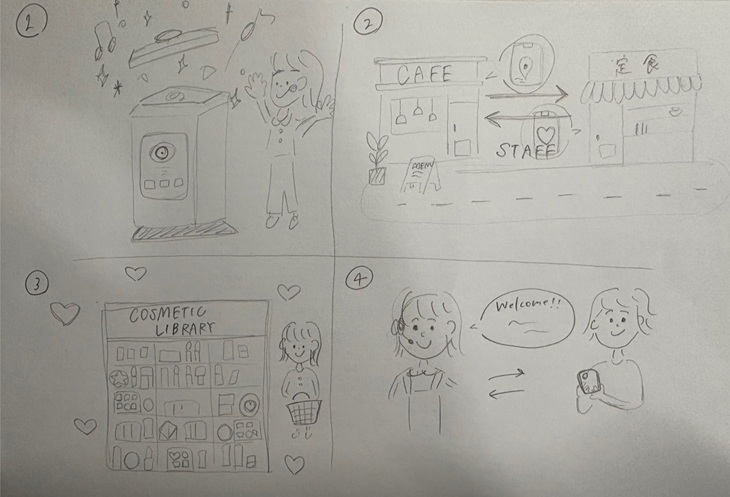

ポイ捨て問題→“捨てたくなるゴミ箱”
⭐課題 街にゴミ箱が少ないことや、分別が面倒なことからポイ捨てが発生。
💗解決案
・ゴミを入れると音や光で楽しく反応する「ゲーミフィケーション型ゴミ箱」。
・AIカメラで自動的に分別してくれるので、利用者はただ入れるだけ。
・ゴミを入れるとアプリでポイントが貯まり、カフェ割引などに使える仕組み。→ ポイ捨て削減＋地域経済活性化に貢献。
アルバイトの人手不足 → “シェアスタッフプラットフォーム”
⭐課題 バイト先で人が足りず、1人あたりの負担が大きい。
💗解決案
・同じエリアの飲食店・小売店などで「人手をシェア」できるアプリ。
・今日は自分の店が忙しいから、近くの店から一時的にスタッフを派遣。
・報酬はアプリ内で即時支払い、学生や主婦が空き時間だけ働きやすい。→ 店の過労問題を解決しつつ、働き手にも柔軟な収入源を提供。
コスメの使い切れない問題 → “シェア＆リユースコスメ”
⭐課題 流行や新商品につられて次々購入、結局使い切らずに余ってしまう。
💗解決案
・使い切れなかったコスメを「小分けリサイクル」して交換・販売できる仕組み。
・専用のリフィル容器に詰め替えて、衛生管理をした上で再流通。
・または「サブスク型コスメ図書館」を作り、月額でいろんなコスメを試して返却可能に。→ ムダを減らしながら、美容を楽しめる新しいライフスタイル。
海外のお客さんとのコミュニケーション → “リアルタイム翻訳バイトサポート”
⭐課題 海外観光客が来たときに言語が通じず、接客に困る。
💗解決案
・スマホやイヤホンを通じて、店員の言葉を即座に翻訳＆再生。
・ただ翻訳するだけでなく「接客用フレーズ集」をAIが提案。
・店舗全体で導入することで、外国人対応に強い店として差別化。→ 店員の不安を解消し、観光客も安心して利用可能に。
イメージイラスト
